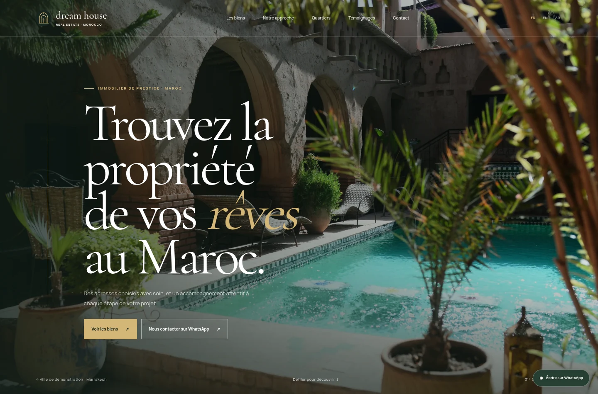
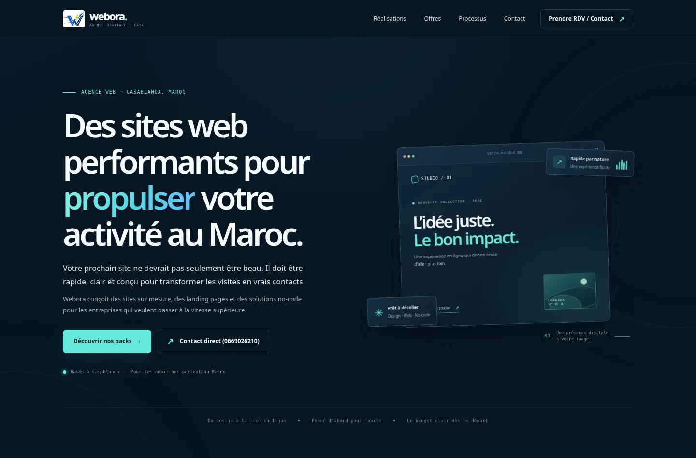
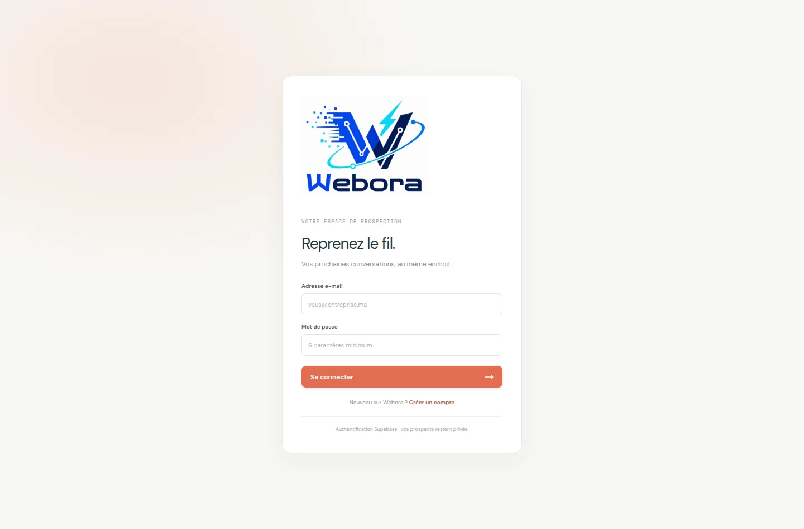
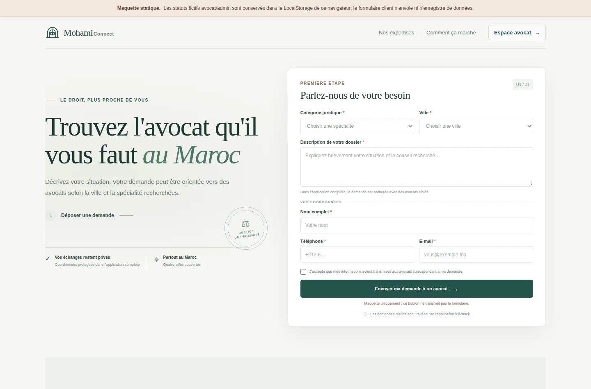
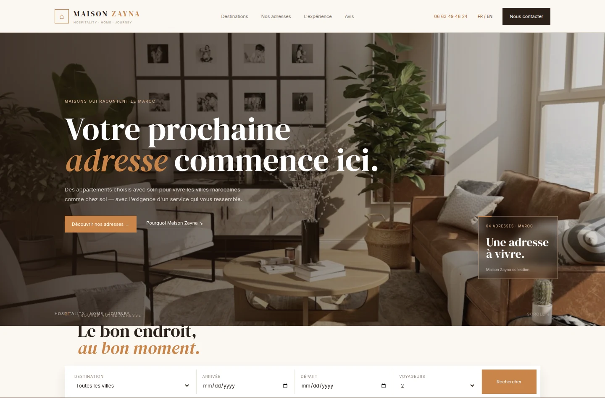
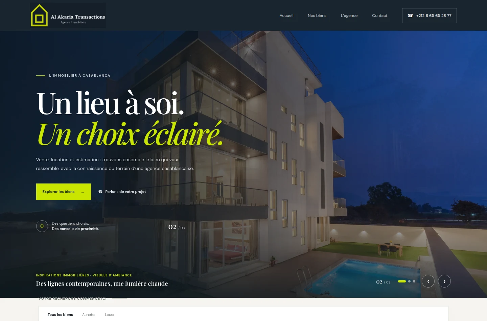
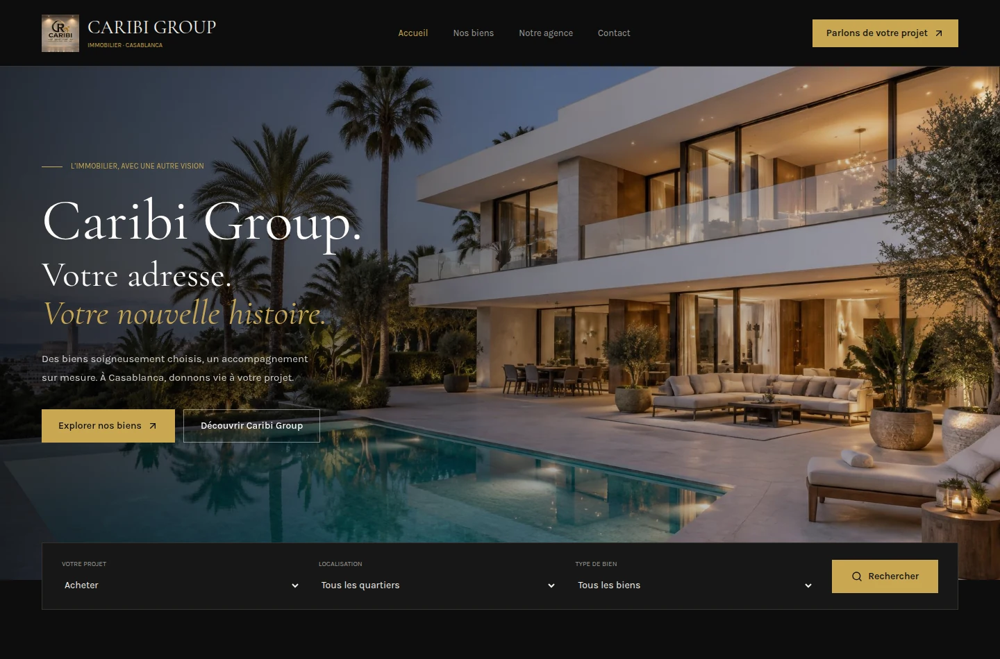

01 / IMMOBILIERCréatrice de sites web · Casablanca, Maroc
Le web, fait
pour faire sens.
Je conçois des expériences digitales aussi belles à parcourir qu’efficaces au quotidien — pour les marques qui ont quelque chose à dire.
01 / 07Du premier croquis à la mise en ligne.

PENSÉ POUR LES GENS.
CONÇU POUR AVANCER.
CONÇU POUR AVANCER.
01 — L’intention
Un site réussi ne se contente pas d’être beau.
Il aide votre activité à aller quelque part.
02 — Sélection de projets
Des idées devenues
expériences.
Des univers différents.
Une même attention au détail.
PARCOURIR
7 projets affichés

02 / CRM
03 / JURIDIQUE
04 / HOSPITALITÉ
05 / IMMOBILIER
06 / IMMOBILIER07 / STUDIO WEB · CASABLANCA
↗ Chaque réalisation ouvre un nouvel onglet pour vous laisser explorer le projet.
Témoignages clients
Leur expérience,
leurs mots.
Chaque projet se construit avec une vraie collaboration. Je préfère partager ici des retours authentiques, avec l’accord des personnes concernées.
UN ESPACE POUR VOS RETOURS
Bientôt, des témoignages réels.
Cette section sera complétée avec des avis clients vérifiés. Aucun témoignage de démonstration n’est présenté comme un avis authentique.
À compléter après accord des clientsPartager votre retour ↗
03 — Ce que je fais
De l’idée
au digital.
Une présence en ligne claire, vivante et adaptée à la réalité de votre activité.
Imaginer la suite ↗Sites vitrines & pages de marque
Une identité digitale cohérente qui raconte votre activité et donne envie de vous choisir.
Parcours web pensés pour l’action
Des repères simples, une navigation fluide et des appels à l’action là où ils comptent.
Expériences adaptées à votre secteur
Immobilier, hospitalité, services : chaque projet a ses codes et ses visiteurs.
Responsive & prêt à être partagé
Une expérience conçue pour trouver sa place sur mobile, tablette et ordinateur.
04 — Ma façon d’avancer
Simple, clair.
Ensemble.
Un cadre rassurant.
Un résultat qui vous ressemble.
On écoute
Vos objectifs, vos contraintes et ce que vous voulez vraiment changer.
On imagine
Une direction visuelle et un parcours qui répondent au bon besoin.
On construit
Une expérience soignée, pensée pour vos visiteurs et vos usages.
On lance
Votre site prend vie et vous pouvez le partager avec le monde.
05 — À vous de jouer
La prochaine
bonne idée,
c’est la vôtre.
Vous avez un projet, une envie, ou simplement une question ? Parlons-en.
Parler de mon projet sur WhatsApp↗ou appeler le +212 6 69 02 62 10Décrire mon projet dans le formulaire ↗ Casablanca, Maroc · Disponible à distance